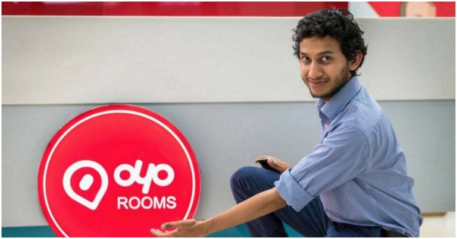
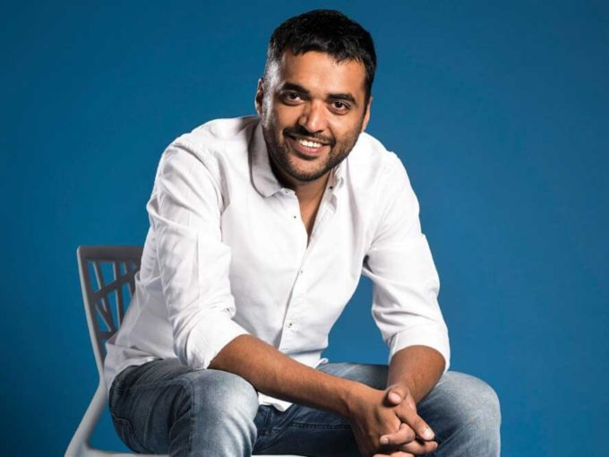

Top Entrepreneurs who are shaping the future of India
"All our dreams can come true, if we have the
courage to pursue them."
-Walt Disney
An entrepreneur is an individual
who creates a new business, bearing most of the risks and enjoying most of the rewards. The entrepreneur is commonly seen as an innovator,
a source of new ideas, goods, services, and business/or procedures.Entrepreneurs play a key
role in any economy, using the skills and initiative necessary to anticipate needs and bring
good new ideas to market. Entrepreneurs who prove to be successful in taking on the risks of
a startup are rewarded with profits, fame, and continued growth opportunities. Those who fail,
suffer losses and become less prevalent in the markets. Age is truly no bar for these young Indian
entrepreneurs who have set out to break stereotypes and carve out a unique niche for themselves.
Read on to know more about their stories....!
Ritesh Agarwal
Age :- 25 YearsFounder :- OYO RoomsNet Worth :- $365 Million

Ritesh Agarwal’s entrepreneurial journey is
one of the most successful entrepreneur stories in India. This man is one of the youngest entrepreneurs of
India and the founder of a budget room provider service named OYO.
He launched his first startup named Oravel Stays Pvt. Ltd. in 2012 at the age of 18 years.
After a lot of research, he pivoted Oravel to OYO in 2013. This company is basically running in 5+ countries
including UAE, England, Singapore, and Malaysia.
He was never fond of studies, so he dropped formal education out of plans. OYO Rooms are funded by Lightspeed
Ventures and Green Oaks Capital. Ritesh started his journey of OYO with 1 hotel in May 2013 but it currently grew
to over 8500 hotels at present. OYO rooms have revenue of $360 million according
to a 2016 report. Agarwal has great characteristics of entrepreneurship from childhood. He has been named among top 50
entrepreneurs by TATA first dot awards in 2013. He was also listed into Forbes list 2017 under young entrepreneurs of the world.
Trishneet Arora
Age :- 26 YearsFounder :- TAC SecurityNet Worth :- $5 Million
The boy which failed in class 8, who lost hope of securing the future. Even when he applied through distance education,
he failed again in 12th class. However, everything’s changed for him now. He’s currently one of the youngest
ethical hackers in the country, Arora was just
19 when he started TAC Security in 2013.
At the age of 25, Trishneet Arora is an author, a self-described friendly hacker and the founder and CEO of cyber security startup
TAC Security Solutions. The India-based company performs Vulnerability Assessment and Penetration Testing for corporates
identifying weaknesses in their cyber security. He has received funding from angel investor Vijay Kedia and support from former VP of IBM,
William May. In 2017, Arora was listed among the 50 Most Influential Young Indians by GQ Magazine, while August 25, 2017 was proclaimed
"Trishneet Arora Day", by the Mayor of Santa Fe, New Mexico.
Vijay Shekhar Sharma
Age :- 41 YearsFounder :- PaytmNet Worth :- $2.1 Billion
Vijay Shekhar Sharma launched the Paytm
as a mobile wallet application through which you could send and receive money through various methods which include up to the system, QR code,
directly to someone’s number. But seeing its popularity launched it’s another product known with the name “Paytm Mall”.
It is an e-commerce application through which you can buy goods.
After the launch of Paytm Mall, they launched their own small Paytm payment banks. With the help of Paytm payment
banks, it offers you to send money without any third-party charges, it also allows you to send money through IMPS, BHIM UPI, NEFT and many more services are being
given by Paytm to its users.
Deepinder Goyal
Age :- 32 YearsFounder :- ZomatoNet Worth :- $19 millions

Deepinder Goyal, Founder &
CEO, Zomato, is the Founder and
CEO of Zomato. Prior to starting Zomato, Deepinder worked as a management consultant with Bain and
Company in New Delhi. It was at Bain that Deepinder conceived the idea of an online restaurant information service after seeing the demand for menu cards among
his colleagues. He left Bain in 2008 to start Zomato (then foodiebay) out of his apartment and has since overseen strategy and product development. Deepinder
graduated with a Mathematics and Computing degree from IIT Delhi in 2005 and hails from Muktsar in Punjab
Zomato, founded in 2008, is India’s largest restaurant guide listing over 42,000 restaurants across 12 cities in the country – Delhi NCR, Mumbai, Bangalore, Chennai,
Kolkata, Pune, Hyderabad, Ahmedabad, Jaipur, Chandigarh, Lucknow and Indore. Zomato was started by IIT Delhi alumni in July 2008 for Delhi NCR and has expanded its
services over a span of 4 years to 12 cities in India. Info Edge has invested over $6.5M in Zomato since 2010. Zomato has recently forayed into print as well with
the Citibank Zomato Restaurant Guide 2012. Zomato is headquartered in New Delhi and currently employs 150 people. Zomato has expanded into the international markets
with the launch of their Dubai section and will expand to more cities in the Middle East and South East Asia by the end of 2012
Top Indian Entrepreneurs
Name
Company and Net worth
Anand Mahindra
Mahindra and Mahindra
$1.6 Billions
Azim Premji
Wipro
$7.2 Billions
N. R. Narayana Murthy
Infosys
$2.5 Billions
Mukesh Ambani
Reliance Industries
$80.6 Billions
Ratan Tata
TATA Group
$1 Billions
Future of Entrepreneurship in India
In India, business was traditionally considered to be the domain of scholarly challenged
individuals or the result of natural inheritance within business communities. Gradually, the
appetite for risk and the acceptance of failure increased, but only recently have alternate professions
and the idea of "following one’s dream" gained approval. In particular, entrepreneurship caught
the fancy of the Indian middle class after the economy was liberalized. The economic reforms introduced
in 1991 reduced the bureaucratic controls, promoted private enterprise, and lowered the barriers to
creating new businesses.Coupled with the emergence of knowledge economy, the demand for skilled employees
greatly increased and a trend emerged toward technology entrepreneurship in the services sector, which is
less capital-intensive than traditional industries.
Indeed, the future of entrepreneurship in India lies in the services sector, and the Government of
India is providing support to encourage this trend. However, there are as many challenges as there
are opportunities.
Click here to read more about this.